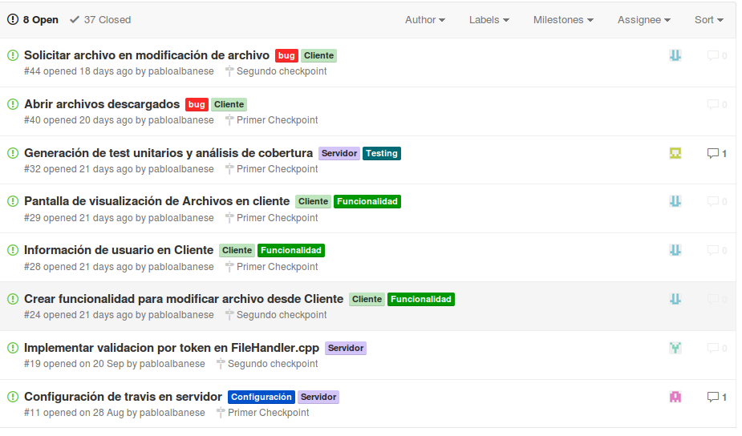

Documentación del proyecto¶
Gestión del proyecto¶
Para la gestión de las tareas utilizamos la funcionalidad de Issues que provee Github, también utilizando los milestones (hitos) para configurar los dos checkpoints y la entrega final.
División de tareas¶
| # | Titulo | Estado | Responsable |
|---|---|---|---|
| 43 | Árbol de archivos muestra los eliminados | Closed | eliventura |
| 42 | Implementar Botón borrar archivo | Closed | eliventura |
| 41 | Limpiar cajas de texto al logearse | Closed | eliventura |
| 40 | Abrir archivos descargados | Closed | eliventura |
| 39 | Subida de archivos no se mantiene en carpeta | Closed | eliventura |
| 38 | Renderizado del árbol | Closed | kevinmlew |
| 37 | Creación de archivo MAKE | Closed | pabloalbanese |
| 36 | Refactoring a test Python | Closed | kevinmlew |
| 35 | Creación de TEST API en python | Closed | pabloalbanese |
| 34 | Implementar creación de carpetas en Servidor | Closed | pabloalbanese |
| 33 | Implementación de Manejo de versiones archivos | Closed | pabloalbanese |
| 32 | Generación de test unitarios y análisis de cob. | Closed | pabloalbanese |
| 31 | Realizar documentación para 1er entrega | Closed | pabloalbanese |
| 30 | Mejorar el manejo de quota y quota limit | Closed | pabloalbanese |
| 29 | Pantalla de visualización de Archivos en cliente | Closed | kevinmlew |
| 28 | Información de usuario en Cliente | Closed | kevinmlew |
| 27 | Manejo de botón Atrás en Cliente | Closed | kevinmlew |
| 26 | Implementar funcionalidad Búsqueda de archivos | Closed | eliventura |
| 25 | Implementar funcionalidad Visualizar versiones | Closed | jiclotus |
| 24 | Crear funcionalidad para modificar archivo | Closed | kevinmlew |
| 23 | Generación de test unitarios en c++ | Closed | kevinmlew |
| 22 | Opción para crear carpetas en cliente | Closed | eliventura |
| 21 | Creación de test de concurrencia | Closed | kevinmlew |
| 20 | Formatos fecha en File.cpp | Closed | kevinmlew |
| 19 | Implementar validacion por token en FileHandler | Closed | eliventura |
| 18 | Implementación de File en API Servidor | Closed | kevinlew |
| 17 | Actualización de documentación API Rest. | Closed | pabloalbanese |
| 16 | Implementar subida y bajada de archivos | Closed | jiclotus |
| 15 | Implementación de API Users 2. | Closed | eliventura |
| 14 | Interfaz User. Parte 1/2 | Closed | pabloalbanese |
| 13 | Pantalla de login en Cliente | Closed | kevinlew |
| 12 | Configuración de Doker en servidor | Closed | kevinlew |
| 11 | Configuración de travis en servidor | Closed | jiclotus |
| 10 | Configuración de Cmake en proyecto servidor | Closed | jiclotus |
| 9 | Crear modulo para logear y archivo de conf. | Closed | eliventura |
| 8 | Integrar jsoncpp a Servidor | Closed | pabloalbanese |
| 7 | Creación de API Rest | Closed | pabloalbanese |
| 6 | Crear capa de datos para rocksdb | Closed | eliventura |
| 5 | Creación de proyecto Cliente | Closed | kevinmlew |
| 4 | Análisis de base de datos RocksDB | Closed | pabloalbanese |
| 3 | Integrar proyecto con Moongose | Closed | kevinmlew |
| 2 | Creación de proyecto integrado a RocksDB | Closed | jiclotus |
Cronograma¶
- Entrega 1er checkpoint: 30 de Septiembre de 2015
- Entrega 2do checkpoint: 28 de Octubre de 2015
- Entrega: 18 de Noviembre de 2015
Control de versiones y workflow¶
Para el control de versiones, tanto del código del Servidor como del Cliente se utilizó GitHub.
Sistema de ticketing¶
Se han personalizando los labels de acuerdo a si eran tareas del Servidor, Cliente, Bugs, Funcionalidades, Testing, Documentación, de forma tal que se pueda filtrar fácilmente por varios de estos labels.
La siguiente es una vista parcial:
